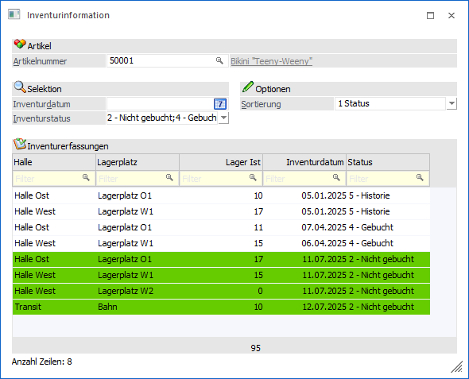
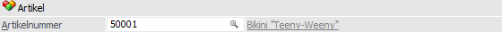
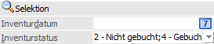
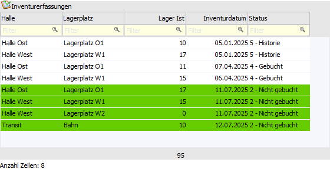
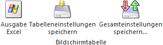

Mit Hilfe des Menüpunkts…
1 WinLine FAKT
1 Erfassen
1 Inventur
1 Inventurinformation
… können die Inventurerfassungen (aktuelles Wirtschaftsjahr) eines Artikels in Form einer WinLine Tabelle ausgegeben werden.

Folgende Eingabefelder, Einstellungen und Informationen stehen zur Verfügung:
Artikel

Ø Artikelnummer
An dieser Stelle kann die Artikelnummer hinterlegt werden, für welche die Inventurerfassungen des aktuellen Wirtschaftsjahres angezeigt werden sollen.
Hinweis
Wird das Programm "Inventurinformation" aus dem Artikelstamm (Register "Lager" - Unterregister "Lagerwerte" ) oder der Inventur heraus geöffnet, so wird die Artikelnummer automatisch vorbelegt und kann nicht geändert werden.
Selektion

Ø Inventurdatum
Mit Hilfe dieses Eingabefelds kann eine Selektion auf das anzuzeigende Inventurdatum durchgeführt werden.
Ø Inventurstatus
An dieser Stelle kann mit Hilfe einer Mehrfachauswahlliste definiert werden, welche Inventurstatus dargestellt werden sollen. Folgende Möglichkeiten stehen zur Verfügung:
ü 2 - Nicht gebucht
ü 4 - Gebucht
ü 5 - Historie
Optionen
Ø Sortierung
Die standardmäßige Sortierung innerhalb der Tabelle "Inventurerfassungen" kann mit Hilfe der Option "Sortierung" vorgegeben werden.
ü 1 - Status
Es wird zunächst
absteigend nach "Status" sortiert. Die weitere Sortierung erfolgt nach
"Lagerort" (wenn vorhanden), "Inventurdatum", "Arbeitnehmer" und
"Erfassungsdatum".
ü 2 - Lagerort
Es wird zunächst
aufsteigend nach "Lagerort" sortiert. Die weitere Sortierung erfolgt nach
"Status" (absteigend), "Inventurdatum", "Arbeitnehmer" und
"Erfassungsdatum".
Hinweis
Erfolgt die Anzeige für einen Hauptartikel mit Ausprägungen, so wird zunächst immer nach der Artikelnummer aufsteigend sortiert.
Tabelle "Inventurerfassungen"

In der Tabelle werden, gemäß der zuvor getroffenen Selektion, alle Inventurerfassungen des Artikels angezeigt.
Ø Artikelnummer
Handelt es sich bei dem Artikel um einen Hauptartikel mit Ausprägungen, so wird in dieser Spalte die Artikelnummer der Ausprägung angezeigt.
Ø Lagerort 1 bis Lagerort 6
Wird der Artikel mit Lagerorten geführt, so werden in diesen Spalten (hier "Lagerort 1 = Ort" und "Lagerort 2 = Platz") die Namen der jeweiligen Lagerorte angezeigt.
Ø Lager Ist
An dieser Stelle wird die Menge der Inventurerfassung angezeigt.
Ø Lager Ist 2
Handelt es sich um einen Artikel mit 2 Mengen, so wird in dieser Spalte die Menge 2 der Inventurerfassung angezeigt.
Ø Inventurdatum
An dieser Stelle wird das Inventurdatum der Erfassung dargestellt.
Ø Status
In dieser Spalte wird der Status der Inventurerfassung angezeigt. Folgende Status sind möglich
ü 2 - Nicht gebucht
Es handelt
sich um eine Inventurerfassung, welche noch nicht gebucht wurde.
ü 4 - Gebucht
Es handelt sich um
die zuletzt gebuchte Inventurerfassung.
ü 5 - Historie
Im Gegensatz zu
dem Status "4 - Gebucht" handelt es sich um eine Inventurerfassung, welche
bereits gebucht wurde, allerdings nicht um die zuletzt gebuchte.
Ø Optionale Spalten
Neben den Standard-Spalten können über das Kontextmenü der rechten Maustaste (Funktion "Spalten anzeigen / verstecken") jederzeit folgende Spalten hinzugefügt bzw. entfernt werden:
ü Charge/Identnr.
Handelt es sich
um einen Chargen- oder Identnummernartikel, so wird in dieser Spalte die
entsprechende Nummer angezeigt.
ü Colli EK / Colli VK
Mit Hilfe
der Colli-Spalten kann die Verpackungseinheit / Maßeinheit dargestellt
werden.
ü Erfassungsdatum
Es wird das
Erfassungsdatum angezeigt.
ü Zählliste
In dieser Spalte wird
die Zählliste dargestellt, über welche die Erfassung vorgenommen wurde.
ü Benutzer
An dieser Stelle wird
der WinLine Benutzer dargestellt, welcher die Erfassung vorgenommen hat.
ü Mitarbeiter
In dieser Spalte
wird jener Mitarbeiter dargestellt, welcher der Erfassungszeile zugeordnet
wurde.
ü Notiz
Hier wird die Notiz
ausgewiesen, welche bei der Erfassung hinterlegt wurde.
Tabellenbuttons

Ø Ausgabe Excel
Durch Anwahl des Buttons "Ausgabe Excel" wird der Inhalt der Tabelle an Microsoft Excel übergeben.
Ø Tabelleneinstellungen speichern
Die Spalten einer Tabelle können grundsätzlich an beliebige Positionen verschoben, bzw. in der Breite entsprechend angepasst werden. Durch Anwahl des Buttons "Tabelleneinstellungen speichern" werden die Einstellungen benutzerspezifisch gespeichert und bei dem nächsten Aufruf des Programmpunktes wieder vorgeschlagen.
Ø Gesamteinstellungen speichern
Im Gegensatz zu "Tabelleneinstellungen speichern" können mit "Gesamteinstellungen speichern" mehrere Tabellenaufbauten gespeichert und nach Wunsch geladen werden. Zusätzlich werden Sonderfunktionen der Tabelle (z.B. "Spalte gruppieren") ebenfalls bei der Speicherung bedacht.
Buttons
Ø Anzeigen
Durch Anklicken des Buttons "Anzeigen bzw. der Taste F5 wird die Tabelle der Inventurerfassungen aktualisiert.
Ø Ende
Mit Hilfe des Buttons "Ende" bzw. der Taste ESC wird das Fenster geschlossen.
Ø VCR-Buttons
Über die so genannten VCR-Buttons kann durch Mausklick zwischen den Datensätzen geblättert werden. Hierbei werden Artikel des Typs " 1 - Lagerneutraler Artikel" und "5 - Package-Artikel" automatisch übersprungen.
ü Damit kann der erste Datensatz angesprochen werden.
ü Damit kann der vorherige Datensatz angesprochen werden.
ü Damit kann der nächste Datensatz angesprochen werden.
ü Damit kann der letzte Datensatz angesprochen werden.
Hinweis
Beim Blättern zwischen den Datensätzen werden Ausprägungen standardmäßig "überblättert", d.h. es wird von einem Hauptartikel zum nächsten geblättert. Sollen auch Ausprägungen berücksichtigt werden, so muss beim Blättern zusätzlich die STRG-Taste gedrückt werden.